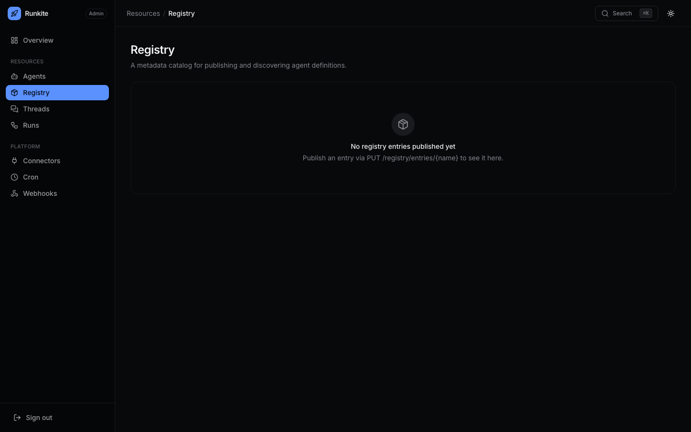

Build
Registry
A tenant-scoped catalog of agent definitions: publish, search, version history. Metadata + source_ref — not auto-deploy.
What it is
Entries carry display name, tags, author, and a source_ref (git URL, plain URL, or inline config snippet).
Version bumps write immutable snapshots when content changes.
Why it is here
Teams need a discoverable list of agents without turning the plane into a package manager that fetches and runs arbitrary code.
How to implement
PUT /registry/entries/{name}with metadata +source_type/source_ref.POST /registry/searchby name substring, tags (all must match), or author.- Browse history via
GET /registry/entries/{name}/versions. - Wire the source into a runner config yourself — publishing does not register a live agent.
PUT /registry/entries/sales-qualifier
{
"display_name": "Sales Qualifier",
"description": "Qualifies inbound leads",
"author": "alice",
"tags": ["sales", "lead-gen"],
"source_type": "git",
"source_ref": "https://github.com/example/sales-qualifier@main"
}
In the product
Admin → Registry — catalog entries

What to expect
- Tenant-private — not a cross-tenant public marketplace.
- No review queue — publish is immediately visible in-tenant.
- Admin name collisions — use
?tenant_id=when two tenants share a name.
Reference: docs/registry.md · Agents